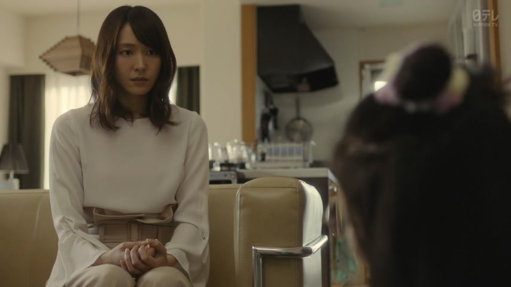
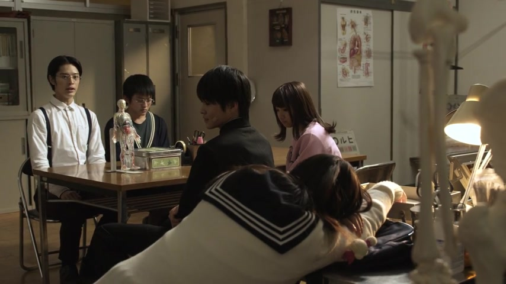
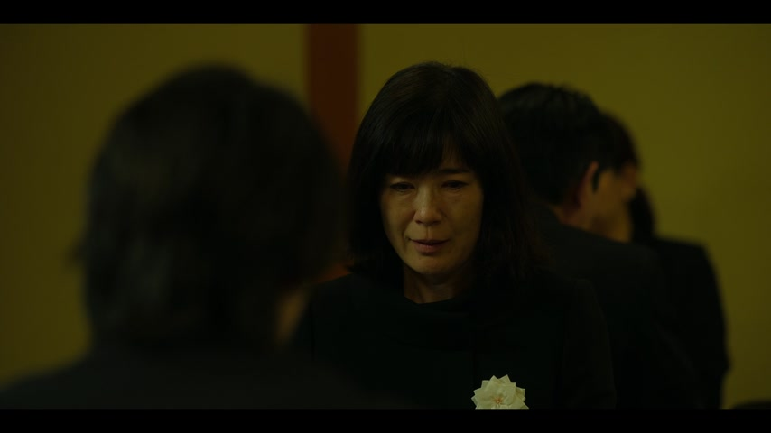

ね

YouTube · video
綺麗な鳴き声ですね
"[Hear that bird?] What a beautiful song, isn't it?"
ね at the end of a sentence means "you see it too, right?". It goes on the very end, after です, ます or a plain verb or adjective.
On this card, she's walking in the forest with her viewers, and they can all hear the bird. She isn't giving news, she's sharing the moment and inviting them to agree.
Polite: ですね / ますね. Casual: drop です, but after a noun or な-adjective add だ: 綺麗な鳴き声だね.

Shirokuma Cafe · Season 1, Episode 5
楽しそうだね
"That sounds fun, huh."
そう ("looks like") works like a な-adjective, so it gets だ before ね.
Examples
You and a friend step outside. It's freezing.
寒いね
"It's cold, huh."
CasualYou're both eating the curry your friend made. It's really good.
これ、おいしいね
"This is good, isn't it."
CasualSmall talk with a neighbor while it pours outside.
よく降りますね
"It sure is raining a lot."
PoliteA coworker shows you a photo of their new apartment.
広い部屋ですね
"What a big room."
PoliteWith and without
寒い
"It's cold." Just a statement, to yourself or anyone.
寒いね
"It's cold, huh." You both feel it, and you're sharing that.
寒いよ
"It's cold, you know." They don't know yet, so you tell them (maybe they're about to go out without a coat).
広い部屋ですね
"What a big room." You're both looking at it.
Sentence mining

YouTube · video
やっぱり、日本の方が寒いですね。
"Japan really is colder, huh."
She's comparing two places and expects the listener to agree. ね after です.

Shirokuma Cafe · Episode 15
遮光器土偶ですね
"That's a dogū figurine, huh."
ですね: the polite version, both looking at the same thing.
Smoking · Episode 1
お目覚めですね
"Oh, you're awake."
ね: saying what you both can see.

Overprotected Kahoko · Episode 6
そうだね。
"Yeah."
そうだ ("that's right") + ね = "yeah, true". Agreeing and sharing the feeling.

Weakest Beast · Episode 5
幸せだね
"You're so lucky."
Casual だ + ね.

Mob Psycho 100 · Episode 10
そうだね
"That's right."
Agreeing: "yeah, true".

The Journalist · Episode 3
そうだね
"You're right."
Same move: そうだ + ね, agreeing.
Reference
A Dictionary of Basic Japanese Grammar
Entry "ne" · pp. 286–288